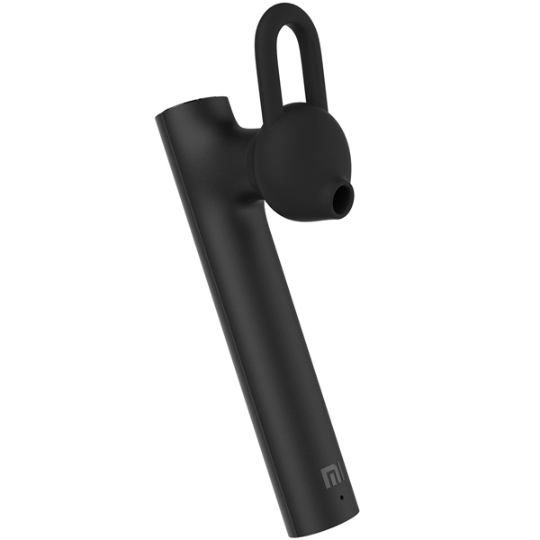

Сначала я пользовался USB-гарнитурой Logitech на работе. Когда перешли на работу из дома, просто забрал её домой и продолжил использовать. Потом заметил, что штекер (USB) часто вываливается, и это стало подбешивать. Нашёл гарнитуру Jabra, которая была у меня уже давно, но через несколько месяцев использования она стала хрипеть. Опять перешёл на Logitech, но постоянно путающиеся провода (особенно гарнитуры с наушниками) стали реально напрягать. Закончилось тем, что я купил самую простую гарнитуру (Xiaomi), и разница в удобстве меня поразила. Вся эта история к тому, что у меня есть полное сравнение "до" и "после", причём в нескольких вариантах.

Выглядит как сучок, обрубленный топором.
На работе постоянные шумы, поэтому гарнитура с наушниками лучше: она немного изолирует от фонового шума. Тем не менее, путаница проводов присутствует. Мысль по работе дома простая: в целом работа из дома несёт некий дополнительный стресс, т.к. не хватает изолированного рабочего пространства. Так что если уж работа из дома предполагает хоть какие-то удобства, этим лучше воспользоваться!
Если грубо, совещания делятся на два типа: те, на которых говоришь, и те, на которых слушаешь. Раньше в офисе присутствие на последних меня убивало, поскольку сидишь на рабочем месте, больше ничего особо не сделаешь. Дома же можно приготовить обед, например (самое частое). Влияет ли это на качество слушания? Да вообще не влияет, а время расходуется ровно в два раза эффективнее.
Какие могут быть требования к гарнитурам? Ну, например:
- Чётко передавать голос. В частности, они не должны быть предназначены для прослушивания музыки, поскольку голос лучше слышно, когда определённый диапазон частот именно обрезается.
- В одно ухо. Во-первых, когда не слышишь себя, начинаешь говорить на повышенной громкости. Во-вторых, удобно быстро надеть / положить.
- Качество микрофона: например, iPods ловят все окружающие шумы, кроме голоса. Есть один коллега, счастливый владелец, привет ему большой.
- Удобно сидеть в ухе. Есть разные механизмы, у Jabra было "за ухо", у Xiaomi "враспор внутри". Первая меня напрягала, вторая практически не заметна.
- Лёгкость и при этом 3,5 часа разговоров минимум для использования в режиме "совещания целый день". Тут нужен компромисс, потому что лёгкость напрямую зависит от размера аккумулятора.
- Заряжаться. Тут есть моменты: сколько по времени и как. Сколько – тут всё примерно одинаково. А вот как, это интереснее. У кого-то беспроводная зарядка (но это опять дороже), у кого-то предпочтения USB-C (чтобы не таскать лишний кабель). Меня не напрягает маленький кабель USB-micro, но как же он чётко фиксируется, это же счастье!
- Недорого! Это был ключевой момент для покупки Xiaomi, поскольку она (гарнитура) стоила 1000 р. Jabra, которая стоила раза в три с чем-то дороже, стала хрипеть, но чинить её ещё дороже, чем купить новую. Так смысл платить больше?
- Бонус: работа с двумя устройствами одновременно. Компьютер (Skype for Business, например) и телефон.
Кроме этого, работа из дома привела к двум другим неявным следствиям:
- Тянет больше гулять, чтобы компенсировать сидение на видео-совещаниях.
- Тянет больше говорить по телефону, а это лучше делать либо на ходу дома, либо во время прогулок, и тут гарнитура опять приходит на помощь.
Отвлекающие факторы дома приводят к тому, что во время совещания нужно буквально на секунду отлучиться. Например, собака поняла, что ты обездвижен, залезла на стол, чтобы что-нибудь с него съесть. Один раз я снял проводную гарнитуру на секунду, вернулся и был пойман с поличным. С беспроводной гарнитурой просто встаёшь, решаешь вопрос и садишься обратно.
Всего лишь гарнитура. Да это просто +100 к улучшению качества жизни!
Комментарии